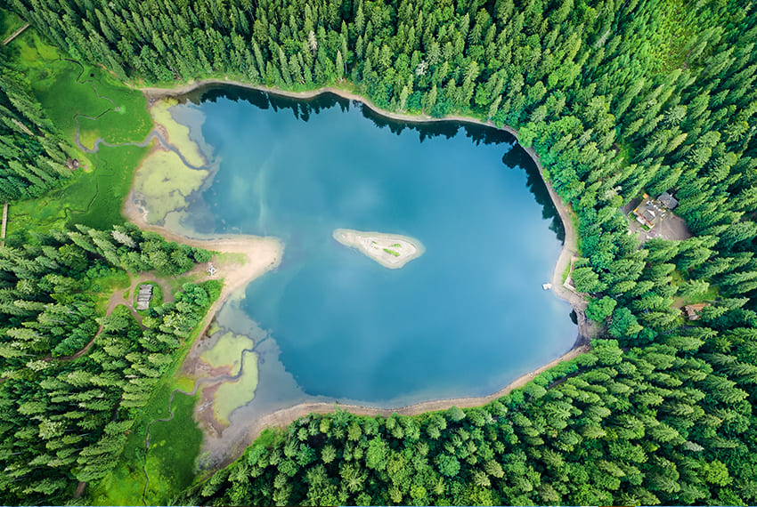
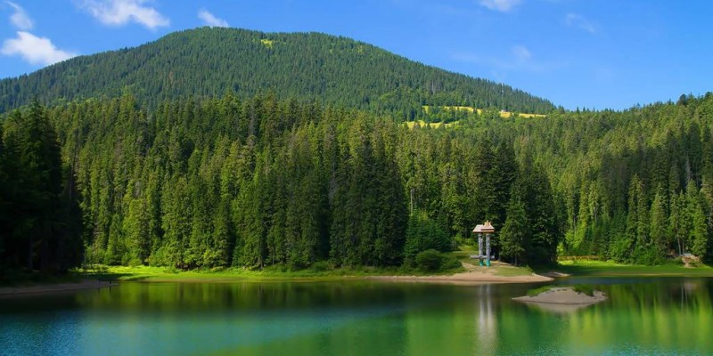
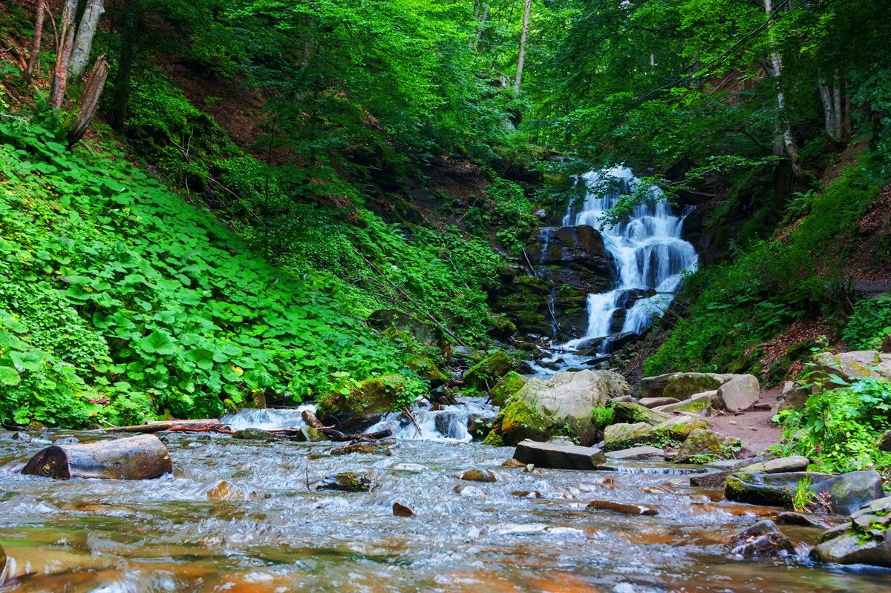
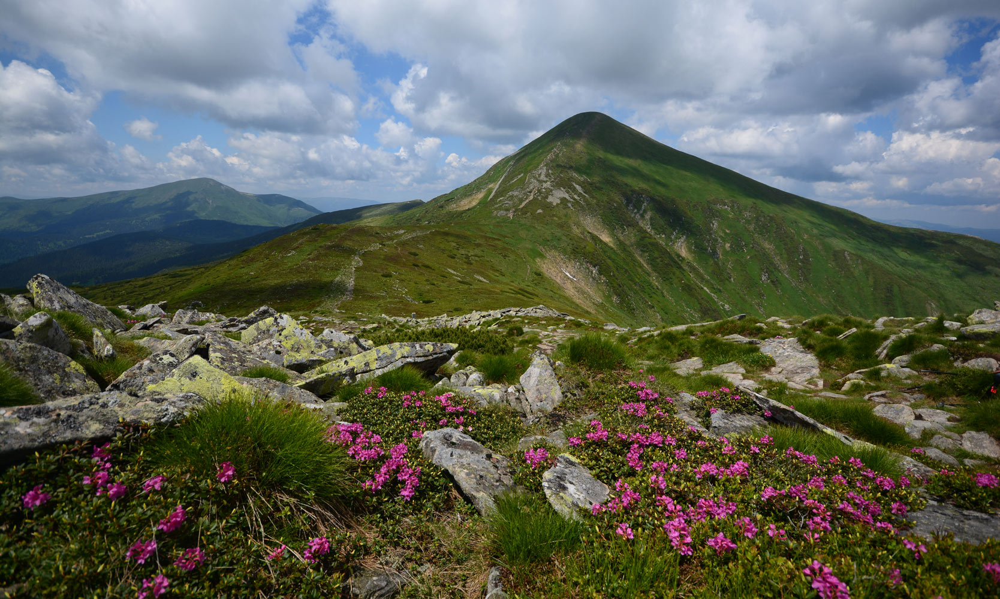

Озеро Синевир — найбільше гірське озеро Карпат
Озеро Синевир знаходиться в заповідній зоні Національного природного парку з однойменною назвою. Здається, що вся краса карпатської землі сконцентрована в цьому місці. Сміливо збирайте компанію і вирушайте до гірського масиву Горгани. Там на висоті майже у тисячу метрів знаходиться сьоме диво України - найбільша водойма Карпатських гір (приблизно 5 гектарів). Синевир здається рідкісним діамантом у смарагдовій короні карпатських лісів. Щоб побачити кришталево чисте озеро з «небом на дні», потрібно завітати в Межигірський район Закарпаття.
Тільки уявіть, вік Синевиру приблизно 10 тисяч років, а його глибина місцями сягає 24-ох метрів. Завдяки цьому вода залишається крижаною за будь-яких погодних умов. Через це зануритися у водойму можуть дозволити собі тільки справжні відчайдухи. Чистоту озера визначають його мешканці – рибка форель, яка потребує найчистішого середовища. Але не забуваймо – вилов риби заборонений, а перед тим, як вживати воду, краще її прокип'ятити.
 
Водоспад Шипіт
Бажаєте почути, як розмовляють гори? Тоді неодмінно відвідайте одним із найкрасивіших водоспадів карпатських гір – Шипот (Шипіт). Знаходиться гідрологічне диво в підніжжі гори Гемба, яка є серцем полонини Боржава. Справжній скарб ретельно захований від людського ока серед густих лісів та стрімких скель, і тільки голосний гул води виказує його розташування.
Все для вашої ж зручності. Водоспад знаходиться неподалік села Пилипець. Вже там можна з комфортом
переночувати, спробувати унікальну карпатську кухню, познайомитися з місцевими традиціями. Спеціально з
села організовують автобусні тури, кінні прогулянки.
Тільки уявіть, як чудово проїхатися на санях
чи возі, не упускаючи жодного красивого куточку, дихаючи свіжим повітрям та насолоджуючись лісовою
піснею. Такого в автобусі точно не буде.

Говерла (2 061 м) – найвища вершина України
Усі ми в школі на уроках географії (це не залежить від того подобався нам цей предмет чи ні) вивчали, що
найвищою горою України є вершина Говерла, її висота над рівнем моря – 2061 м. Варто додати, що
підкорення цієї вершини є найбільш популярним маршрутом серед туристів, які подорожують Карпатами. За
хороших погодних умов тут настільки людно, що навіть є можливість зустріти своїх знайомих.
Говерла найбільш відвідуване місце Українських Карпат. Сюди здійснюють сходження щороку тисячі людей від
травня аж до вересня. Відвідувати ці місця в іншу пору рекомендується лише професійним альпіністам.
